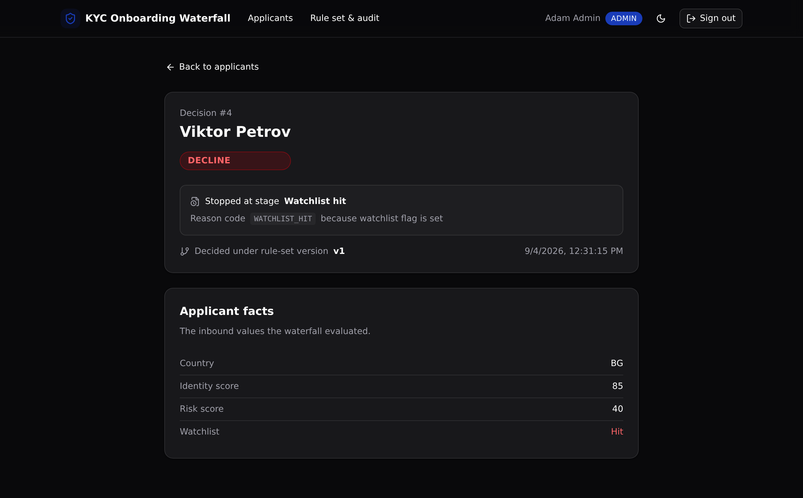

One governed, versioned KYC waterfall that every onboarding channel calls, so each applicant decides the same way and every decision is auditable.

Onboarding rules pulled out of scattered channel code into one governed layer.
The rules live in one rule_stages table, ordered and versioned, instead of copied across the account-opening app and partner channels.
Editing a stage bumps the rule-set version. Re-run the same applicant and the decision can move, with both decisions kept.
Every run writes one decisions row with the outcome, the exact stage that fired, its reason code, and the version.
Roles are enforced at the API layer. A viewer reads, an analyst submits and runs, an admin edits the rules. Never row-level security.
An applicant runs top to bottom. The first stage that fires stops the waterfall and decides.
One API group, api:kyc. Access is checked in the endpoint, at the API layer.
| Method | Path | Enforces |
|---|---|---|
| POST | /api:kyc/seed | Public. Resets and seeds the demo data. |
| POST | /api:kyc/auth/login | Public. Email and password to a token. |
| GET | /api:kyc/applicants/list | Any signed-in role. |
| POST | /api:kyc/applicants | Analyst or admin. Validates the scores. |
| POST | /api:kyc/applicants/{id}/run | Analyst or admin. Runs the waterfall. |
| GET | /api:kyc/decisions/{id} | Any role. Joins applicant and firing stage. |
| GET | /api:kyc/decisions | Any role. The audit trail. |
| GET | /api:kyc/stages | Any role. The ordered rule set. |
| PUT | /api:kyc/stages/{id} | Admin only. Edits a stage, bumps the version. |
React + Vite + Tailwind v4 + shadcn/ui, deriving every path and type from the backend defs.
One-click sign-in as viewer, analyst, or admin through the real login endpoint.
The list, a submit form, and a "Run waterfall" action per applicant.
The outcome, the stage that fired, its reason code, the version, and the facts.
The ordered versioned stages (admins edit inline) and the audit trail of every run.
Point your coding agent at the repo and let it clone, install, and deploy your own copy.
Start a new Xano backend from the template at https://github.com/xano-scratch/kyc-onboarding-waterfall Clone it, run npm install, then `npx xanots login` and `npm run xano:deploy` to get your own live copy. Call the POST /api:kyc/seed endpoint once to load the demo data.
The live preview links are ephemeral. They expire and re-deploy publishes a fresh URL, so a shared link can stop serving. The durable artifact is this repo. Clone it and run npm run xano:deploy for your own live copy.